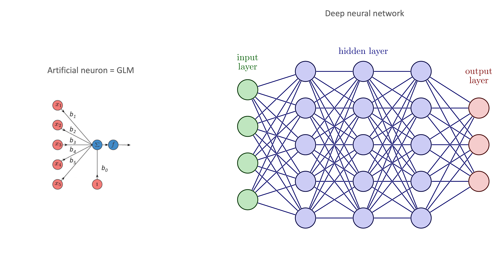

Informally, a p-value is the probability, under a specified statistical model (e.g., the null hypothesis of no effect), that a statistical summary of the data would be equal to or more extreme than its observed value.
\[
P(D^* \mid H_0) \ne P(H_0 \mid D)
\]
What’s so magical about the 5% p-value threshold?
Sir Ronald Aylmer Fisher (1890-1962), mathematical statistician and geneticist
“Personally, the writer prefers to set a low standard of significance at the 5 per cent point, and ignore entirely all results which fails to reach this level. […]
A scientific fact should be regarded as experimentally established only if a properly designed experiment rarely fails to give this level of significance.” — Fisher RA 1926
What’s so magical about the 5% p-value threshold?
The explanation is neither philosophical nor scientific, but sociological
“Everyone uses P-values. It is the same reason we can use money. When everyone believes in something’s value, we can use it for real things; money for food, and P-values for knowledge claims, publication, funding, and promotion. It does not matter if the P-value does not mean what people think it means; it becomes valuable because of what it buys.” — Goodman (2019)
The “null ritual” is bad for science
Statisticians and others have been sounding the alarm about these matters for decades!
Scientists rise up against statistical significance Amrhein (2019)
American Statistical Association (ASA) statement on p-values Wasserstein (2016)
Shift focus away from the “null ritual” toward [Bayesian] estimation with uncertainty
Scientists should acknowledge and communicate the uncertainty of their conclusions!
However, a recent study found that in one leading journal (Science) the frequency of hedging words such as “might” and “probably” has fallen by about 40% over the past 2 decades.
Avoid the use and be wary of “dichotomous/bright-line thinking”, embrace uncertainty and be thoughtful, open, and modest!
Focus on understanding and transfer
In a traditional course, students master bits of knowledge (e.g., t-test, chi-square, ANOVA, regression, and so on) but often fail to develop a coherent understanding of how the bits are connected together. This results in fragmented knowledge that doesn’t transfer.
The aim of this course is deep understanding and transferable knowledge.
Focus on statistical modeling
The course is organized around the concept of statistical modeling and the practice of data analysis: exploring variation, modeling variation, and evaluating models.
This beautiful simplicity (\(y = a \cdot x + b\)) means that there is less to learn and remember!
The assumptions underlying each test can be deduced from the linear model and checked with diagnostic plots
Statistical models are at the core of frequentist, Bayesian, and other inference methods
Focus on statistical modeling
Linear models are also at the core of deep neural networks and large language models like ChatGPT

Focus on computational approach
Modern statistics has moved beyond the rigid assumptions and mathematical approximations that were necessary for performing data analysis without a computer
It has become a computational science, replacing tools such as the CLT and statistical tables with techniques such as simulation, shuffling, and resampling
Gentle introduction to R
Learn to program and analyze data using R, a widely used, free, open-source, and platform-independent programming language for data science and statistics
R exercises are interleaved throughout the online book, to continually practice applying the methods and functions being taught
The supernova, mosaic, ggformula, dplyr, and Metrics packages are used to provide a simpler and more consistent syntax for statistical modeling and data visualization
Fully-hosted integration of Jupyter notebooks for practicing reproducible data analysis workflows in class and at home:
Intro to data and research question
Explore variation
Model variation
Evaluate models
Conclusion
Focus on learning by doing
Getting your technology ready
In order to use the online book from CourseKata, three things are critical:
You must use a computer or tablet
You should use Chrome as your browser
You must allow third-party cookies
Getting support
CourseKata support is accessed by clicking on the blue icon with a “CK” that appears on the bottom right corner of each page (see picture).
Click on the CK icon to browse or search the knowledge base: find descriptions of R functions used in the book, explore a glossary of statistical terms, or read articles on how to solve common technical issues.
If you need technical support you can submit a ticket to CourseKata support.
R sandbox and cheatsheet
The R sandbox is a place where you can practice writing R code and seeing the results
The R cheatsheet contains the R functions used in the course
You can find the R sandbox and cheatsheet links in the Resources folder of the CourseKata section of the course on Blackboard
Tracking your progress
When you’ve completed all exercises on a page, a Completed badge appears at the top of the page (see picture).
For a more comprehensive view of your progress through the book, go to the My Progress + Jupyter page, the first link in the CourseKata section of the course on Blackboard. This page will show you which pages you have completed, and which ones you still need to work on. You can follow the same link to get to your Jupyter notebooks.
Tips for learning more
The text and exercises in this online book are designed to help you think deeply about the concepts introduced. We’ve found that the most successful students are those who read the book slowly and carefully, complete all exercises, and answer all practice and review questions to the best of their ability.
Because the book is designed to be read slowly, try not to put off your reading assignment until the last minute. If you wait until it’s too late, you won’t have time to go through the pages carefully. You will end up skimming, and if you skim, you won’t learn nearly as much.
Try again…
Don’t just work through the pages once. If you really want to learn, go through them again, especially if you find the material difficult to understand.
When you work through a page again, don’t just look through your previously scored responses. Clear them out, and generate the answers again. Lots of research shows that you will learn more by answering again — much more!
…and again
Your initial responses to the embedded assessment questions reappear if you leave a page and return to it later. For this reason, pages you have completed that include such questions will have a <Try Again> button at the top (see picture).
The best way to review a page is to click the <Try Again> button. You can do this as many times as you wish. You might find this particularly helpful on the review questions at the end of each chapter.
NOTE: Only your initial answers are saved. Using the <Try Again> button won’t change the answers your instructor will see from you.
20% - Regular attendance and participation (you are allowed no more than 2 unexcused absences)
Homework and classwork assignments
Each week, before the start of the first class of the week (Monday at noon, with a few exceptions), you will be expected to:
Complete the reading and exercises of the corresponding chapter in the online book.
Take screenshot of My Progress + Jupyter page, attach to and submit assignment in Blackboard.
Each week, before the start of the second class of the week (Tuesday at noon, with a few exceptions), you will be expected to:
Complete and submit on CKHub the Jupyter notebook assigned as homework for that week.
Complete and submit on CKHub the Jupyter notebook(s) you worked on in class the week before.
The primary grading criterion will be completion of the assignments and submission of code that works. Correctness is a secondary grading criterion.
Group project and presentation
You will work in groups of ~3 (randomly selected within the class).
The group is encouraged to use data from their own research work or publicly available from published biomedical studies.
Your job as a group will be to plan and carry out an analysis of the data based on a specified research question(s) and then describe your analytical process including descriptive and inferential statistics as well as appropriate visualizations.
You will present your analysis to the class as well as produce a Jupyter notebook consisting of a description of the data, research question, analytical approach, findings and conclusions, in the same format as the Jupyter notebooks you worked on throughout the class.
You should work with other students in your group in preparing and presenting the project and the Jupyter notebook should indicate the role each person played in the project.